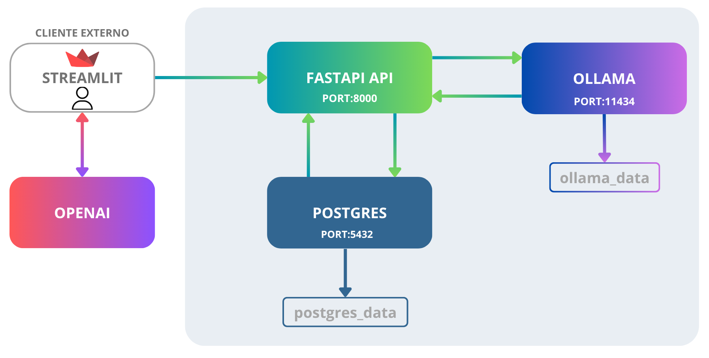

Aurora é uma assistente financeira inteligente que utiliza modelos de linguagem (LLM) integrados a um banco de dados relacional para fornecer respostas personalizadas com base no contexto financeiro do cliente. A aplicação combina FastAPI, PostgreSQL, Ollama (LLM local) e Streamlit para criar um chatbot capaz de analisar transações, metas e perfil do usuário, entregando respostas seguras, contextualizadas e sem alucinação.

A partir de uma base inicial em arquivos CSV e JSON:
data,canal,tema,resumo,resolvido
2025-09-15,chat,CDB,Cliente perguntou sobre rentabilidade e prazos,sim
2025-09-22,telefone,Problema no app,Erro ao visualizar extrato foi corrigido,sim
2025-10-01,chat,Tesouro Selic,Cliente pediu explicação sobre o funcionamento do Tesouro Direto,sim
2025-10-12,chat,Metas financeiras,Cliente acompanhou o progresso da reserva de emergência,sim
2025-10-25,email,Atualização cadastral,Cliente atualizou e-mail e telefone,sim
{
"nome": "João Silva",
"idade": 32,
"profissao": "Analista de Sistemas",
"renda_mensal": 5000.00,
"perfil_investidor": "moderado",
"objetivo_principal": "Construir reserva de emergência",
"patrimonio_total": 15000.00,
"reserva_emergencia_atual": 10000.00,
"aceita_risco": false,
"metas": [
{
"meta": "Completar reserva de emergência",
"valor_necessario": 15000.00,
"prazo": "2026-06"
},
{
"meta": "Entrada do apartamento",
"valor_necessario": 50000.00,
"prazo": "2027-12"
}
]
}
[
{
"nome": "Tesouro Selic",
"categoria": "renda_fixa",
"risco": "baixo",
"rentabilidade": "100% da Selic",
"aporte_minimo": 30.00,
"indicado_para": "Reserva de emergência e iniciantes"
},
{
"nome": "CDB Liquidez Diária",
"categoria": "renda_fixa",
"risco": "baixo",
"rentabilidade": "102% do CDI",
"aporte_minimo": 100.00,
"indicado_para": "Quem busca segurança com rendimento diário"
},
{
"nome": "LCI/LCA",
"categoria": "renda_fixa",
"risco": "baixo",
"rentabilidade": "95% do CDI",
"aporte_minimo": 1000.00,
"indicado_para": "Quem pode esperar 90 dias (isento de IR)"
},
{
"nome": "Fundo Imobiliarios (FII)",
"categoria": "fundo",
"risco": "medio",
"rentabilidade": "Dividend yield (DY) costuma ficar entre 6% a 12% ao ano",
"aporte_minimo": 100.00,
"indicado_para": "Perfil moderado que busca diversificação e recorrencia mmensal"
},
{
"nome": "Fundo de Ações",
"categoria": "fundo",
"risco": "alto",
"rentabilidade": "Variável",
"aporte_minimo": 100.00,
"indicado_para": "Perfil arrojado com foco no longo prazo"
}
]
data,descricao,categoria,valor,tipo
2025-10-01,Salário,receita,5000.00,entrada
2025-10-02,Aluguel,moradia,1200.00,saida
2025-10-03,Supermercado,alimentacao,450.00,saida
2025-10-05,Netflix,lazer,55.90,saida
2025-10-07,Farmácia,saude,89.00,saida
2025-10-10,Restaurante,alimentacao,120.00,saida
2025-10-12,Uber,transporte,45.00,saida
2025-10-15,Conta de Luz,moradia,180.00,saida
2025-10-20,Academia,saude,99.00,saida
2025-10-25,Combustível,transporte,250.00,saida
Foi realizada a modelagem de um banco relacional para permitir:
Essa modelagem permite análises como:
No projeto, foram criadas triggers no banco de dados para automatizar processos críticos e garantir integridade financeira:
Toda vez que uma transação é inserida na tabela transacoes, a trigger trg_atualiza_saldo executa a função fn_atualiza_saldo que:
CREATE OR REPLACE FUNCTION dio_bank.fn_atualiza_saldo()
RETURNS TRIGGER
LANGUAGE plpgsql
AS $$
DECLARE
saldo_atual_conta NUMERIC;
limite_conta_valor NUMERIC;
BEGIN
SELECT saldo_atual, limite_conta
INTO saldo_atual_conta, limite_conta_valor
FROM dio_bank.contas_correntes
WHERE id = NEW.conta_corrente_id;
IF NEW.tipo_operacao = 'credito' THEN
UPDATE dio_bank.contas_correntes
SET saldo_atual = saldo_atual + NEW.valor
WHERE id = NEW.conta_corrente_id;
ELSIF NEW.tipo_operacao = 'debito' THEN
IF saldo_atual_conta + limite_conta_valor < NEW.valor THEN
RAISE EXCEPTION 'Saldo insuficiente para realizar o débito';
END IF;
UPDATE dio_bank.contas_correntes
SET saldo_atual = saldo_atual - NEW.valor
WHERE id = NEW.conta_corrente_id;
END IF;
RETURN NEW;
END;
$$;
CREATE TRIGGER trg_atualiza_saldo
AFTER INSERT ON dio_bank.transacoes
FOR EACH ROW
EXECUTE FUNCTION dio_bank.fn_atualiza_saldo();
Quando um novo cliente é inserido na tabela clientes, a trigger trg_criar_conta_corrente cria automaticamente uma conta corrente associada, garantindo que todo cliente tenha sua conta pronta para transações.
CREATE OR REPLACE FUNCTION dio_bank.criar_conta_corrente()
RETURNS TRIGGER AS $$
BEGIN
INSERT INTO dio_bank.contas_correntes(cliente_id)
VALUES (NEW.id);
RETURN NEW;
END;
$$ LANGUAGE plpgsql;
CREATE TRIGGER trg_criar_conta_corrente
AFTER INSERT ON dio_bank.clientes
FOR EACH ROW
EXECUTE FUNCTION dio_bank.criar_conta_corrente();
✅ Com isso, asseguramos integridade, evitamos inconsistências manuais e reduzimos a complexidade da lógica na camada da aplicação.
A aplicação possui uma API responsável por:
├── api
│ ├── core → configuração e base do sistema
│ ├── llm → integração com IA
│ │ ├── factory → criação do provider
│ │ ├── prompt → templates de prompt
│ │ ├── provider → integração com Ollama
│ │ ├── services → regras da IA
│ │ │ ├── bank_assistente.py
│ │ │ ├── context_builder.py
│ │ │ └── intent_classifier.py
│ ├── models → modelos do banco
│ ├── repository → acesso a dados
│ ├── router → endpoints
│ ├── schemas → validação (Pydantic)
│ └── service → regras de negócio
POST /api/v1/ → Criar cliente
{
"nome": "João Silva",
"idade": 32,
"profissao": "Analista",
"renda_mensal": 5000,
"perfil_investidor": "moderado",
"objetivo_principal": "Reserva de emergência",
"aceita_risco": false
}
GET /api/v1/?cod_account=1 → Buscar cliente
GET /api/v1/{cod_conta}?cod_account=1 → Buscar dados da conta
Resposta:
{
"client": {
"nome": "João Silva",
"idade": 32,
"renda_mensal": 5000
},
"transection": [
{
"descricao": "Supermercado",
"valor": 200
}
]
}
POST /api/v1/ask_assistent_ia
Request:
{
"question": "Qual meu saldo?",
"cod_conta": 10000
}
Response:
{
"answer": "Seu saldo atual é de 68466.0"
}
🚀 Esse endpoint integra diretamente com a LLM (Ollama) para gerar respostas inteligentes baseadas no contexto do usuário.
A Aurora utiliza o modelo gemma3 via Ollama, permitindo execução local.
LLMFactory → define qual provider usarOllamaProvider → integração com modelo localBankAssistant → orquestra a respostaO Streamlit é responsável por:
intent_classifier identifica intençãoContextBuilder busca dados no banco"Seu saldo atual é de 68466.0. Seu último gasto foi com supermercado no valor de 930.0."
A Aurora utiliza dois tipos de prompt para garantir respostas precisas e sem alucinação:
Aurora você é uma assistente financeira de um banco digital,
suas resposta são educada, amigável e objetiva.
Sua tarefa é responder perguntas usando SOMENTE os dados fornecidos.
REGRAS IMPORTANTES:
1. Use apenas os dados das seções:
- DADOS_CLIENTE
- TRANSACOES
- METAS
- INVESTIMENTOS
2. Nunca invente informações.
3. Nunca corrija a escrita do cliente
4. Nunca julgue os gastos financeiros do cliente
5. Último débito:
- tipo_operacao = debito
- mais recente por created_at
6. Último crédito:
- tipo_operacao = credito
- mais recente por created_at
7. Saldo:
- usar campo saldo_atual
8. Investimentos:
- conservador → baixo risco
- moderado → equilibrado
- arrojado → maior risco
9. Sempre iniciar com o nome do usuário
10. Listagem de transações:
- apenas descrição, valor e data
11. Cálculos:
- somar créditos e débitos corretamente
12. Respostas:
- simples, objetiva, até 4 frases
- sem markdown ou formatação especial
### PERGUNTA
{PERGUNTA}
### DADOS_CLIENTE
{DADOS_CLIENTE}
### TRANSACOES
{TRANSACOES_BANCARIAS}
### METAS
{METAS}
### INVESTIMENTOS
{PRODUTOS_DISPONIVEIS}
INSTRUÇÃO:
Use apenas os dados acima para responder à pergunta.
A Aurora combina diversos conceitos essenciais de tecnologia para criar uma solução completa e escalável no setor financeiro.
A aplicação integra:
✅ Com essa arquitetura, a Aurora entrega uma solução moderna, segura e escalável, combinando inteligência artificial, dados estruturados, boas práticas de desenvolvimento e tecnologias de containerização.